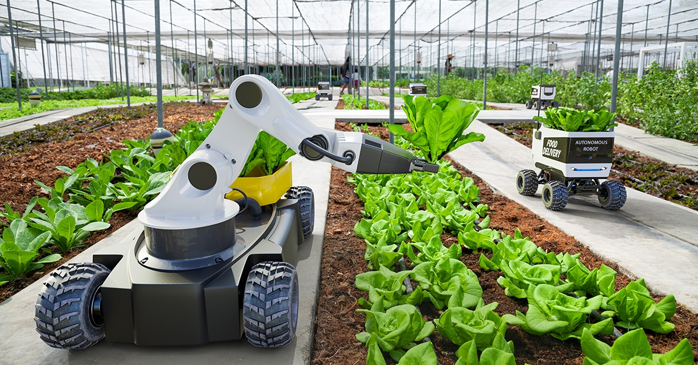

A G R I C U L T U R E
Chemical Fertilizers

“Automated tools is gaining much demand in the farming sector.
Farmers can reduce their manpower and time in irrigation activities and thus increase productivity. This makes the task easier and faster for them to increase the production of farm products.
Industrial automation is gradually raising its need in almost every field of the world. One such field is farming.
Data Control and Robotics
Robotics are fed data through central data systems and as a robot studies a plant, it analyses the data of the plant and the soil with the central system and makes a decision on what to do with the plant.
The same thing if done by a farmer would take time and also, there would be some chances of misreading the information.Robotics helps the farmers with accurate information and helps them in dealing with the plant. It gives proper predictions and accurate trends.
Smart Sensor Control
Several sensors are spread throughout the farm like level, pH, conductivity, etc. which helps in accurately controlling the field operations.All the sensors are connected to a central computer and this helps in determining the working parameters of the field.
If the farmer gets proper information on the water properties and quantity, he will be able to decide how much water to feed to several sections of the farm.
Autonomous Tractors
Through central control, it irrigates and controls every part of the field accurately and more efficiently.
They just need a predefined path and they will travel on it properly and reach the designated parts properly. Sowing and yielding capacity are increased to a great extent as human errors are reduced in a big way.